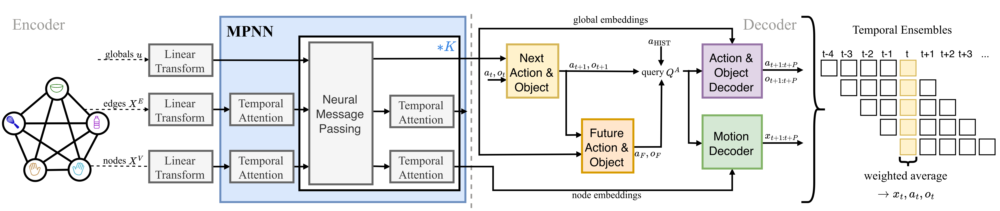
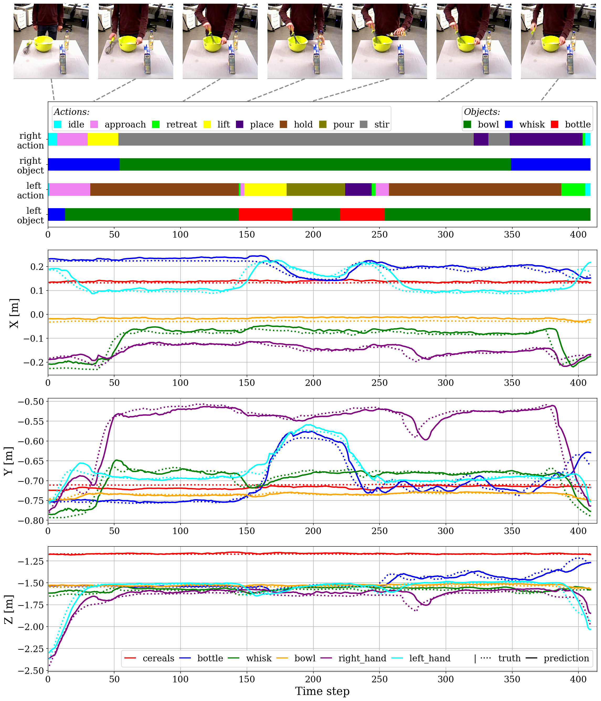
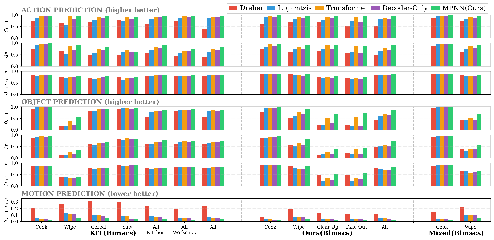
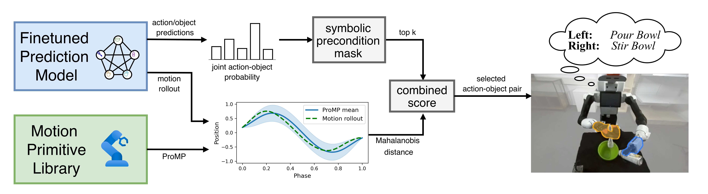

Semantic-Geometric Task Representations for Bimanual Manipulation from Human Demonstrations to Robot Action Planning
Abstract
Learning structured task representations from human demonstrations is essential for understanding long-horizon manipulation behaviors, particularly in bimanual settings where action ordering, object involvement, and interaction geometry can vary significantly. A key challenge lies in jointly capturing the discrete semantic structure of tasks and the temporal evolution of object-centric geometric relations in a form that supports reasoning over task progression. In this work, we introduce a semantic-geometric task graph-representation that encodes object identities, inter-object relations, and their temporal geometric evolution from human demonstrations. Building on this formulation, we propose a learning framework that combines a Message Passing Neural Network (MPNN) encoder with a Transformer-based decoder, decoupling scene representation learning from action-conditioned reasoning about task progression. The encoder operates solely on temporal scene graphs to learn structured representations, while the decoder conditions on action-context to predict future action sequences, associated objects, and object motions over extended time horizons. Through extensive evaluation on human demonstration datasets, we show that semantic-geometric task graph-representations are particularly beneficial for tasks with high action and object variability, where simpler sequence-based models struggle to capture task progression. Finally, we demonstrate that task graph representations can be transferred to a physical bimanual robot and used for online action selection, highlighting their potential as reusable task abstractions for downstream decision-making in manipulation systems.
Learning Semantic-Geometric Task Graph-Representations

Model architecture: the graph encoder transforms features into embeddings via the MPNN, and the decoders forecast actions, objects, and motions.
Training on Human Demonstrations

A qualitative example from KIT(Bimacs) of the cooking task. Key frames (top row) are aligned with the action and object predictions of our MPNN model over time. The 3D motion predictions are shown below. Solid lines denote model predictions and dashed lines denote the ground-truth.

Cross validation results on selected tasks from the KIT(Bimacs), from Ours(Bimacs) and a mixed dataset, including also multi-task models. Action prediction accuracies are shown on top, object predictions in the middle, and motion prediction RMSE in the bottom row. The baselines are shown in different colors.
Real-Robot Online Action Planning

An online planner couples the learned task representations with a learned movement primitive library for online action planning on a real bimanual robot.
Cooking Task
Clear Up Task
Video Presentation
BibTeX
@article{herbert2026semantic,
title={Semantic-Geometric Task Representations for Bimanual Manipulation from Human Demonstrations to Robot Action Planning},
author={Herbert, Franziska and Prasad, Vignesh and Liu, Han and Koert, Dorothea and Chalvatzaki, Georgia},
journal={IEEE Robotics and Automation Letters (RA-L)},
year={2026},
}Acknowledgments
This research is funded by EU Horizon Europe Projects MANiBOT (101120823), ARISE (101135959), the DFG Emmy Noether Programme (CH 2676/1-1), the ERC project “SIREN” (101163933) and the BMFTR Projects “RIG” (16ME1001) and “IKIDA” (01IS20045). The authors gratefully acknowledge the computing time provided on the high-performance computer Lichtenberg II at TU Darmstadt, funded by the BMFTR and State of Hesse.